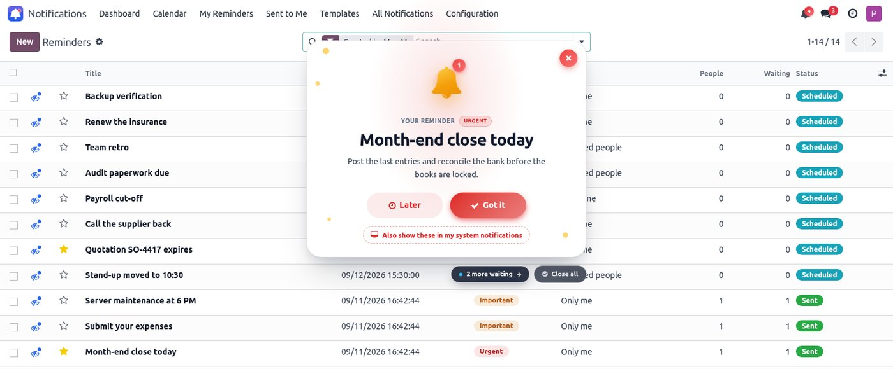
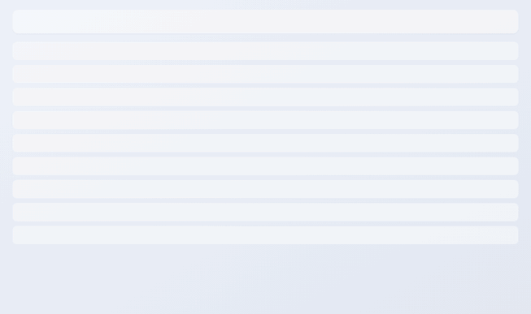
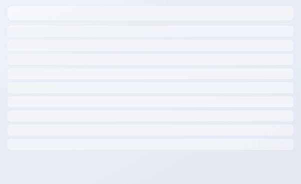
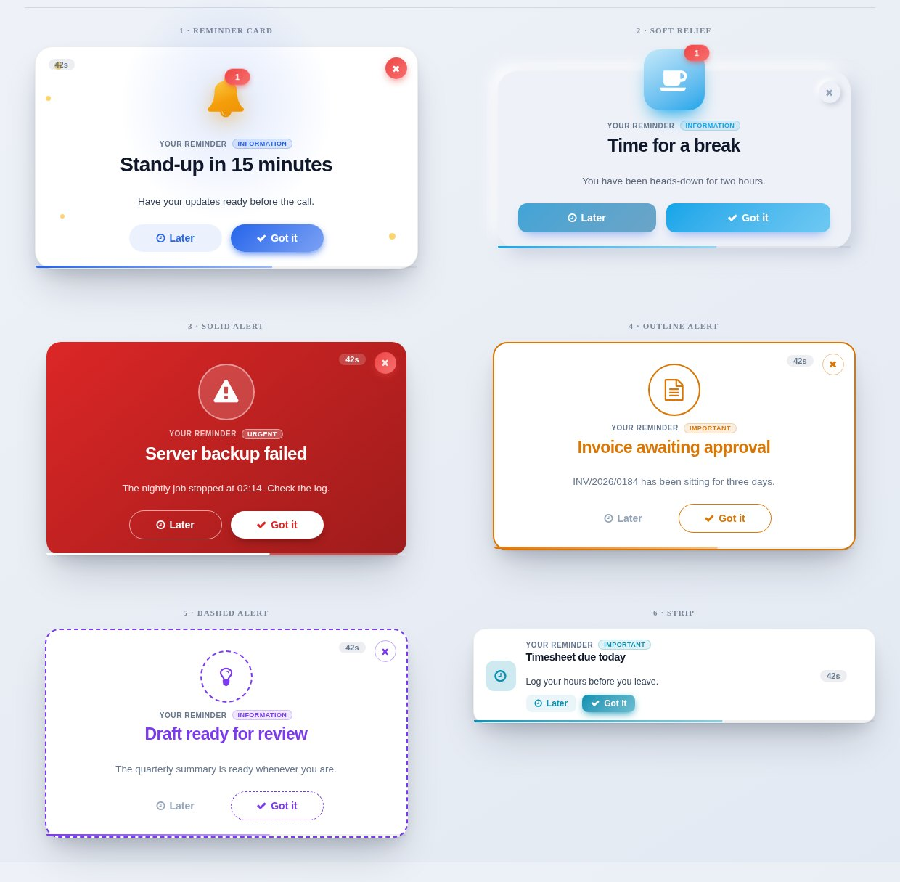
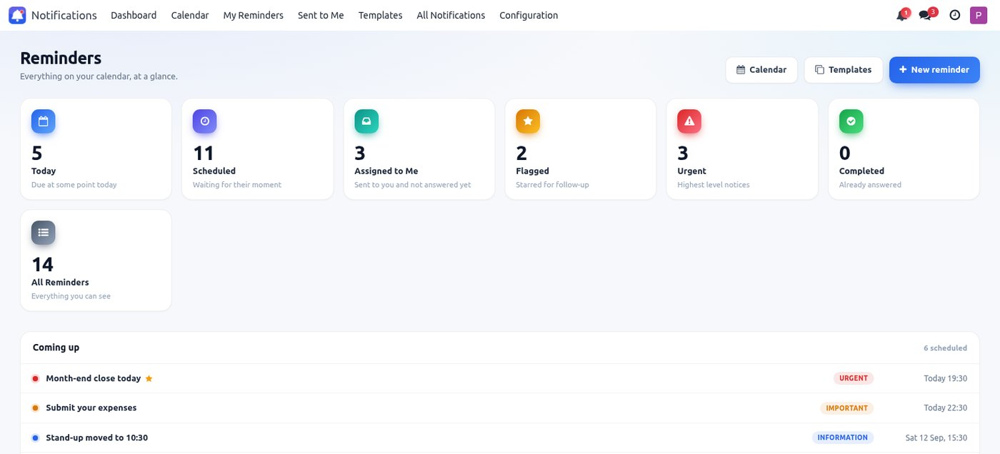
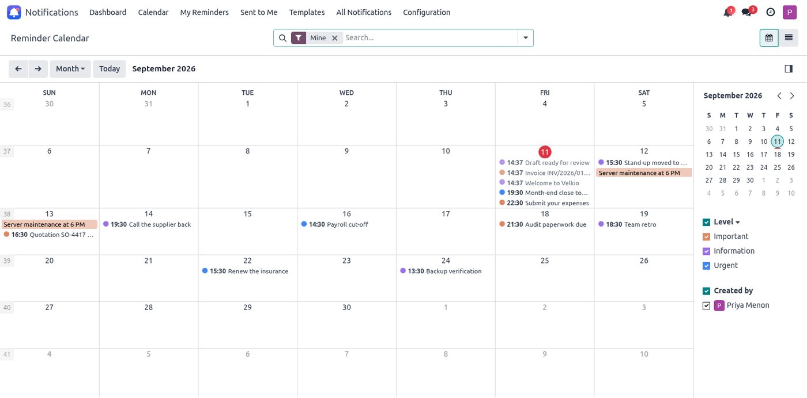
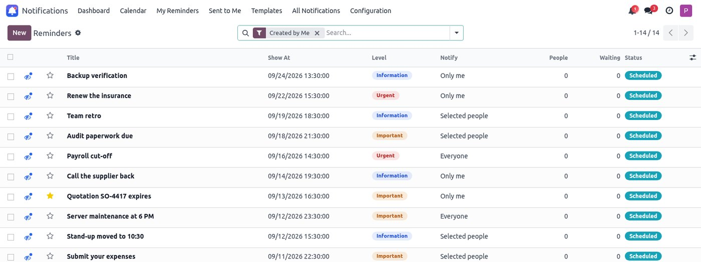
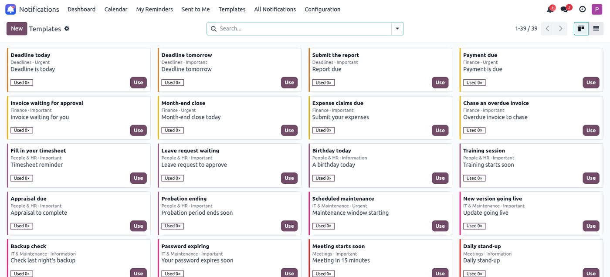
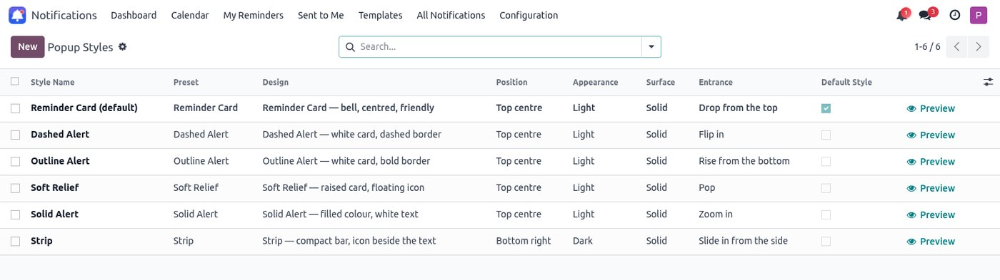
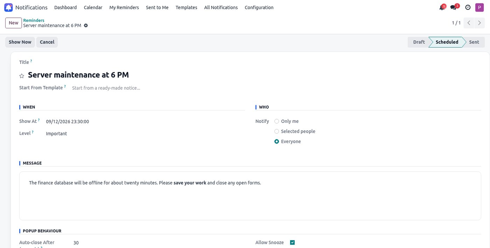

Velkio Reminders & Notifications
Popups · Dashboard · Calendar · Templates — for Odoo 17
By Velkio – Odoo Solutions ·
Support: velkio.odoosolution@gmail.com
A reminder that actually reaches the person. It appears on screen wherever they are working in Odoo, at the exact second it is due — on every device they are signed in to.

A real screen. The notice arrives over whatever you were doing, and never blocks it.
Activities sit in a list. Emails wait in an inbox. Chatter needs someone to open the record. None of that helps when something has to be seen now.
The card drops in over the screen you were already on. It counts itself down, and anything else waiting queues up underneath rather than stacking over your work.

The browser is told how long is left and counts it down itself, then asks the server to confirm before showing anything. Not “within a minute”.
One account on a laptop and a phone gets the notice on both. Answer it on either and it comes down on the other.
Optionally mirrored into the operating system’s own notification centre, so it lands even when Odoo is not the window in front.
Each design has its own layout, motion and personality. Pick one for the whole company, or give a single notice its own.

Reminder Card · Soft Relief · Solid Alert · Outline Alert · Dashed Alert · Strip

All six, side by side.
Six positions, your own width, corner radius, shadow depth, light or dark, solid or glass.
Information, Important and Urgent each carry their own colour — or set one accent for everything.
Drop, pop, slide or fade, with an optional chime and a countdown bar that shows the time left.
Seven buckets, counted live and opening straight into the exact set that was counted — so the number you clicked is the list you get.

A month view of everything coming to you — what you wrote, what was addressed to you, and what has already been delivered. Click a day to add one.

Every row carries a read marker that belongs to you alone. Open a notice and it marks itself read; click the eye to put it back to unread.

Unread reminders are counted on the bell in the top bar and badged on the app icon on the home screen, so the number is there before you open anything.
Ten categories of everyday wording — meetings, approvals, deadlines, payroll, stock, maintenance and more. Pick one, set the time, send it.

Everything about how a notice looks lives in a record you can edit, with a Preview on my screen button that shows the result immediately.

Two groups, and a form that shows each person only what concerns them.
Sets reminders for themselves, stars and reads what arrives, snoozes, and answers. They cannot send to other people, and cannot change a notice somebody else wrote.
Sends to chosen people or to everybody, edits their own notices, and sees the full delivery history — who was told, who answered, who is still waiting.
Open a notice somebody sent you and you get the title, when it is due, how urgent it is, who wrote it and what it says. The audience picker, the popup settings and the workflow bar belong to the author, so they are simply not there.

Start from a template or from nothing. Give it a time, a level and a message.
Only me, selected people, or everybody. Or press Show Now and skip the waiting.
On their screen, on the second, wherever they are in Odoo — and in their system tray if they asked for it.
Away for three days? One card appears — the most urgent — and the rest wait behind a “more waiting” chip. Close all clears the screen without marking anything read.
Ten minutes, an hour, tomorrow. Put it off on one screen and it is put off on all of them, then comes back when it is due.
Some notices need an answer. Those have no close cross, say so plainly, and keep coming back until somebody clicks Got it.
Star anything to find it again. Your stars are yours — nobody else sees them, even on a notice you both received.
Anyone can turn popups off for themselves. Urgent notices still get through, and everything still lands in their list.
A notice already answered is never pushed again, and a device that was closed catches up the moment it opens.
Including seven that sign one account into two sessions at once to prove the multi-device promise.
| Odoo version | 17.0 — Community and Enterprise |
| Depends on | base, mail, web
— nothing else |
| Licence | LGPL-3 |
| Models added | velkio.notification,
velkio.notification.recipient, velkio.template,
velkio.popup.style |
| Security groups | Notification User, Notification Manager |
| Live delivery | Odoo’s own bus — no polling loop, no third-party service, nothing leaves your server |
| System notifications | Standard browser notifications, asked for once and only with the reader’s permission |
| Setup required | None. Install it and send one. |
Install it, open any screen in Odoo, and send yourself a reminder for one minute from now.